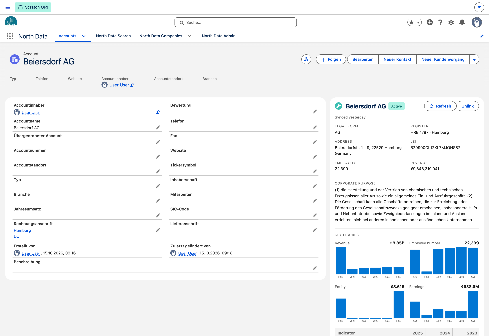
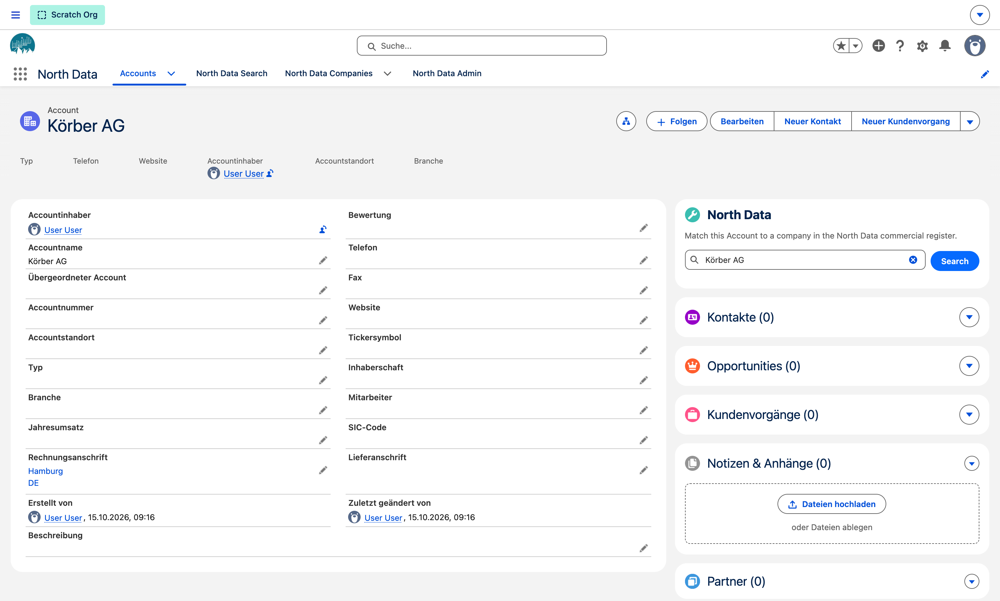
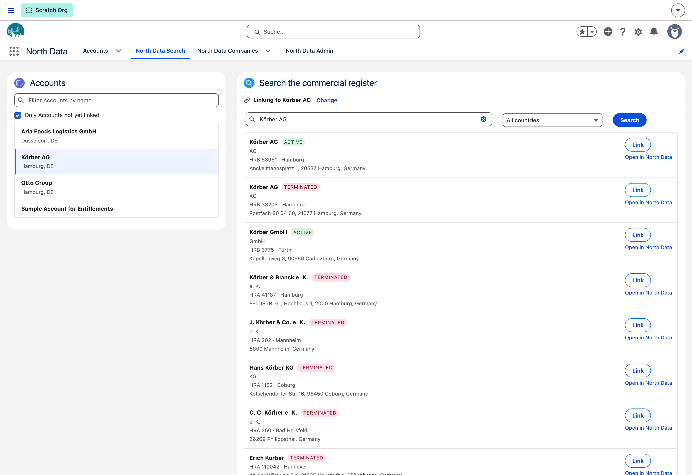
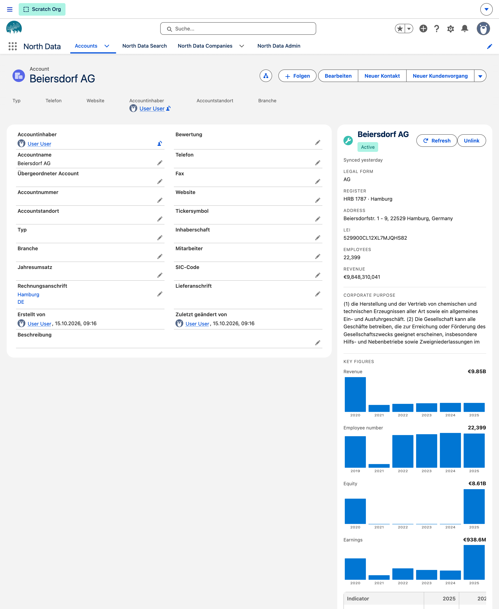
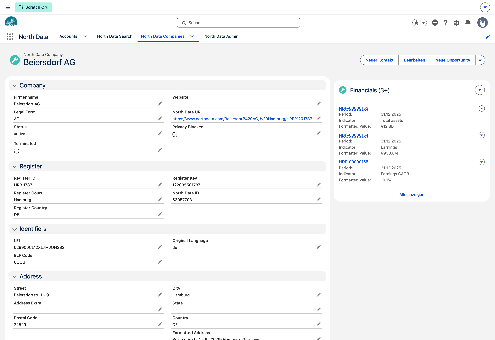
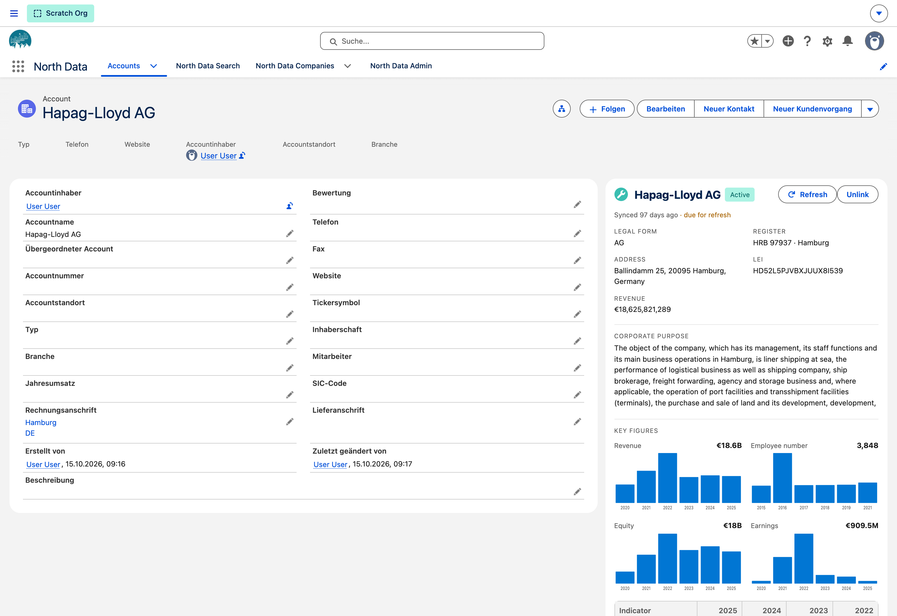
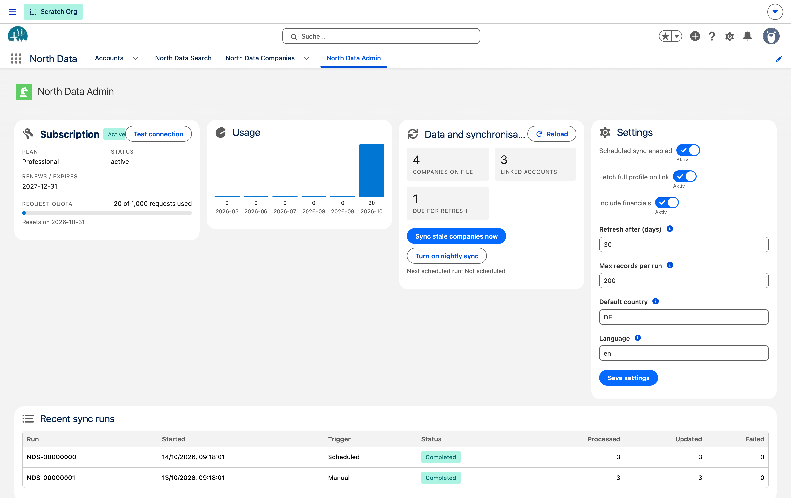

Handelsregisterdaten, direkt am Account. Register data, right on the Account.
Verknüpfen Sie jeden Account mit seinem echten Eintrag im Handelsregister — Rechtsform, Registernummer, Anschrift, Unternehmensgegenstand und sämtliche veröffentlichten Bilanzkennzahlen. Auf der Account-Seite, die Ihr Team ohnehin geöffnet hat, und automatisch aktuell gehalten. Link every Account to its real entry in the commercial register — legal form, registration number, address, corporate purpose and every published financial indicator. On the Account page your team already has open, and kept current automatically.
Ihre Nutzer brauchen kein eigenes North-Data-Konto — der Zugang läuft über Ihr Abonnement. Your users need no North Data account of their own — access runs through your subscription.

Das ProblemThe problem
Firmendaten gehören ins CRM — nicht in einen zweiten Browser-Tab Company data belongs in the CRM — not in a second browser tab
Recherche kostet ZeitResearch costs time
Vertrieb und Backoffice suchen Registernummer, Rechtsform und Umsatz im Browser und tippen sie von Hand ab — bei jedem neuen Account aufs Neue. Sales and back office look up registration numbers, legal form and revenue in a browser and retype them by hand — for every new Account, again and again.
Daten veralten stillData goes stale quietly
Firmierung, Sitz und Rechtsform ändern sich, Gesellschaften gehen in Liquidation. Der CRM-Datensatz bleibt, wie er am Tag der Anlage war. Names, registered offices and legal forms change, companies go into liquidation. The CRM record stays exactly as it was the day it was created.
Zahlen fehlen im BerichtFigures are missing from reports
Umsatz und Mitarbeiterzahl stehen in PDFs und auf fremden Websites. Segmentierung, Priorisierung und Forecast arbeiten deshalb mit Schätzungen. Revenue and headcount live in PDFs and on other people's websites. Segmentation, prioritisation and forecasting run on guesswork instead.
FunktionenFeatures
Vom Firmennamen zum vollständigen Registerprofil From a company name to a complete register profile
Alle Abbildungen stammen aus einer laufenden Salesforce-Org mit installiertem Paket. Every screenshot below comes from a running Salesforce org with the package installed.
Suchen, prüfen, verknüpfenSearch, check, link
Die Suche sitzt direkt im Account. Firmenname eintippen, optional nach Land filtern, Treffer mit Register, Sitz und früheren Firmierungen vergleichen — und mit einem Klick verknüpfen. The search sits on the Account itself. Type a company name, filter by country if you need to, compare matches by register, registered office and former names — and link one with a single click.
- Treffer sind nach Übereinstimmung sortiert, frühere Firmierungen werden mit ausgewiesenMatches are ranked, and former company names are shown alongside
- Eigene Konsole für die Massenarbeit: alle noch nicht verknüpften Accounts als ArbeitslisteA dedicated console for bulk work: every Account not yet linked, as a work list
- Verknüpft wird auf den stabilen Registerschlüssel, nicht auf einen flüchtigen Datensatz-IdentifierLinking is on the stable register key, never on a volatile record identifier


Das Registerprofil, wo es gebraucht wirdThe register profile, where it is needed
Rechtsform, Registergericht und Registernummer, Status, vollständige Anschrift, Unternehmensgegenstand, LEI und ELF-Code — als Panel neben den Account-Feldern. Darunter die Verläufe der letzten Geschäftsjahre und eine Vergleichstabelle. Ein Link führt auf das vollständige Profil bei North Data. Legal form, register court and number, status, full address, corporate purpose, LEI and ELF code — as a panel next to the Account fields. Below it, trends across recent financial years and a period comparison table. A link opens the full profile on North Data.
- Status wie Active oder Liquidation als Abzeichen in der ÜberschriftStatus such as Active or Liquidation as a badge in the header
- Als Lightning-Komponente frei auf der Account-Seite platzierbarA Lightning component you can place anywhere on the Account page
- Geschätzte Werte sind als solche gekennzeichnetEstimated figures are marked as estimates

Alle Kennzahlen — gespeichert, nicht nur angezeigtAll indicators — stored, not just displayed
Jede Kennzahl jedes Geschäftsjahres wird als eigener Datensatz in Ihrer Org abgelegt. Bei einem Konzern sind das mehrere hundert Werte über mehr als zehn Geschäftsjahre. Umsatz, Mitarbeiterzahl und Eigenkapital des jüngsten Jahres stehen zusätzlich direkt auf dem Firmendatensatz — damit funktionieren Listenansichten, Filter, Berichte und Flows ohne Umweg über eine Verknüpfung. Every indicator of every financial year is stored as its own record in your org. For a large group that means several hundred figures across more than ten financial years. Revenue, headcount and equity for the most recent year are also written onto the company record itself, so list views, filters, reports and flows work without joining a child object.
- Ein eigenes Firmenobjekt, das mehrere Accounts gemeinsam referenzieren könnenA dedicated company object that several Accounts can reference at once
- Restatements werden sauber übernommen: zurückgezogene Kennzahlen verschwinden auchRestatements are handled cleanly: withdrawn indicators disappear as well
- Konsolidierte und nicht konsolidierte Abschlüsse bleiben unterscheidbarConsolidated and unconsolidated filings stay distinguishable

Automatisch aktuellCurrent, automatically
Ein nächtlicher Lauf holt alle Datensätze nach, die älter sind als die von Ihnen gesetzte Frist. Veraltete Einträge sind im Panel sichtbar markiert, und ein Klick auf Refresh aktualisiert sofort. Beendete Gesellschaften werden übersprungen — ihr Registereintrag ist endgültig, ein erneuter Abruf verbraucht nur Kontingent. A nightly run picks up every record older than the interval you set. Stale entries are visibly flagged in the panel, and one click on Refresh updates immediately. Terminated companies are skipped — their register entry is final, so re-fetching one only spends quota.
- Frist, Umfang und Anzahl je Lauf sind pro Org einstellbarInterval, scope and records per run are configurable per org
- Jeder Lauf wird protokolliert: verarbeitet, aktualisiert, fehlgeschlagenEvery run is logged: processed, updated, failed

BetriebOperations
Für Administratoren nachvollziehbar Accountable for administrators
Eine eigene Admin-Konsole zeigt, was das Paket tut und was es verbraucht. A dedicated admin console shows what the package does and what it consumes.

Abonnement und KontingentSubscription and quota
Status, Tarif, Laufzeit und verbrauchte Abrufe der laufenden Periode auf einen Blick.Status, plan, term and requests consumed in the current period, at a glance.
Protokoll jedes LaufsA log of every run
Start, Auslöser, Ergebnis und Zahlen je Synchronisationslauf — geplant wie manuell.Start, trigger, outcome and counts for each sync run — scheduled and manual alike.
Zwei BerechtigungssätzeTwo permission sets
Nutzer dürfen suchen, verknüpfen und lesen. Administratoren zusätzlich steuern und konfigurieren.Users may search, link and read. Administrators may also control and configure.
Einstellungen je OrgPer-org settings
Aktualisierungsfrist, Datensätze je Lauf, Standardland, Sprache und ob Kennzahlen mitgeladen werden.Refresh interval, records per run, default country, language, and whether financials are fetched.
Lauf auf KnopfdruckRun on demand
Veraltete Unternehmen lassen sich jederzeit sofort abgleichen, ohne auf die Nacht zu warten.Stale companies can be refreshed at any time, without waiting for the nightly run.
VerbindungstestConnection test
Ein Klick prüft Schlüssel, Lizenz und Erreichbarkeit — mit einer verständlichen Fehlermeldung statt eines Statuscodes.One click checks key, licence and reachability — with a readable message rather than a status code.
EinrichtungSetup
In drei Schritten startklarReady in three steps
Paket installierenInstall the package
Managed Package installieren, einen der beiden Berechtigungssätze zuweisen und die Komponente auf die Account-Seite ziehen. Standardeinstellungen und der nächtliche Lauf werden dabei automatisch angelegt.Install the managed package, assign one of the two permission sets and drop the component onto the Account page. Default settings and the nightly run are created for you.
Schlüssel hinterlegenAdd your key
Ihren Abonnementschlüssel in den Named Credentials eintragen und die Verbindung testen. Salesforce speichert ihn verschlüsselt; er steht nie im Paketquellcode.Enter your subscription key in Named Credentials and test the connection. Salesforce stores it encrypted; it never appears in package source.
Accounts verknüpfenLink your Accounts
Über die Konsole die offenen Accounts abarbeiten. Ab dann hält der nächtliche Abgleich die Daten ohne weiteres Zutun aktuell.Work through the open Accounts in the console. From then on the nightly refresh keeps everything current on its own.
Sicherheit und DatenSecurity and data
Ihre Daten bleiben in Ihrer OrgYour data stays in your org
Das Paket ist von Anfang an für die Salesforce-Sicherheitsprüfung gebaut worden. The package has been built for the Salesforce security review from the start.
Schlüssel verschlüsseltKeys stay encrypted
Zugangsdaten liegen in den Named Credentials von Salesforce, nicht in Metadaten, nicht im Quellcode und nicht in Logs.Credentials live in Salesforce Named Credentials — not in metadata, not in source, not in logs.
Berechtigungen geltenPermissions are enforced
Jeder Zugriff, den ein Mensch auslöst, läuft mit dessen eigenen Objekt- und Feldrechten. Niemand sieht durch das Paket mehr als sonst.Everything a person triggers runs with their own object and field permissions. Nobody sees more through the package than they otherwise would.
Minimaler EingriffA minimal footprint
An Ihren Standardobjekten ändert sich nichts außer einem zusätzlichen Nachschlagefeld am Account. Freigabemodell und Seitenlayouts bleiben unberührt.Nothing changes on your standard objects except one extra lookup field on Account. Your sharing model and page layouts are left alone.
Daten bleiben bei IhnenThe data is yours
Abgerufene Registerdaten und Kennzahlen werden in Ihrer eigenen Org gespeichert und sind dort ganz normal berichts- und exportierbar.Register data and indicators you fetch are stored in your own org, where they report and export like any other record.
Keine Nutzerkonten bei North DataNo North Data accounts per user
Der Zugang läuft über ein einziges Abonnement Ihrer Organisation. Ihre Nutzer legen keine eigenen Konten an.Access runs through a single subscription for your organisation. Your users create no accounts of their own.
Nachvollziehbarer VerbrauchTraceable consumption
Jeder Abruf wird gezählt und ist in der Admin-Konsole einsehbar — keine Überraschung am Monatsende.Every request is counted and visible in the admin console — no surprises at the end of the month.
DatenquelleData source
Powered by North DataPowered by North Data
North Data erschließt Handels- und Unternehmensregister sowie veröffentlichte Jahresabschlüsse und macht sie maschinell auswertbar. Dieses Add-on bringt genau diese Daten in Salesforce — ohne dass Sie eine Zeile Integration bauen müssen. Welche Länder und welche Kennzahlen abgedeckt sind, hängt vom Register ab; die jeweils aktuelle Übersicht führt North Data selbst. North Data opens up commercial and company registers along with published annual accounts, and makes them machine-readable. This add-on brings exactly that data into Salesforce, with no integration work on your side. Which countries and which indicators are covered depends on the register; North Data maintains the current overview.
FAQ
Häufige FragenCommon questions
Brauchen unsere Nutzer ein eigenes North-Data-Konto?Do our users need their own North Data account?
Nein. Ihre Organisation hat ein Abonnement, der Schlüssel wird einmal zentral hinterlegt. Für Ihre Nutzer gibt es kein zusätzliches Login und keinen zweiten Tab.No. Your organisation holds one subscription and the key is entered centrally, once. For your users there is no extra login and no second tab.
Was passiert mit den Daten, wenn wir kündigen?What happens to the data if we cancel?
Was bereits abgerufen wurde, liegt in Ihrer Org und bleibt dort. Es entfallen nur neue Abrufe und der automatische Abgleich.Whatever has already been fetched sits in your org and stays there. Only new requests and the automatic refresh stop.
Funktioniert das auch außerhalb Deutschlands?Does this work outside Germany?
Ja. Die Suche kennt einen Länderfilter, und das Paket speichert Registerland, LEI und ELF-Code mit ab. Welche Register und Kennzahlen zur Verfügung stehen, richtet sich nach der Abdeckung von North Data.Yes. Search has a country filter, and the package stores register country, LEI and ELF code. Which registers and indicators are available depends on North Data's coverage.
Verändert das Paket unsere Standardobjekte?Does the package change our standard objects?
Es kommt ein Nachschlagefeld am Account hinzu, das auf den Firmendatensatz zeigt. Mehr nicht — Freigabemodell, Layouts und bestehende Felder bleiben unverändert.One lookup field is added to Account, pointing at the company record. Nothing else — sharing model, layouts and existing fields are untouched.
Wie viele Abrufe verbraucht die tägliche Arbeit?How many requests does day-to-day use consume?
Eine Suche zählt als ein Abruf, das Verknüpfen oder Aktualisieren eines Unternehmens ebenfalls. Der nächtliche Lauf verbraucht einen Abruf je veraltetem Unternehmen und ist nach oben begrenzt. Status- und Kontingentabfragen zählen nicht mit.A search counts as one request, and so does linking or refreshing a company. The nightly run spends one request per stale company and is capped. Status and quota lookups are not counted.
Bekommen wir wirklich alle Kennzahlen?Do we really get every indicator?
Ja. Es wird nicht auf eine Auswahl reduziert: Jede Kennzahl jedes verfügbaren Geschäftsjahres wird gespeichert und bleibt in Salesforce auswertbar. Die Diagramme zeigen die vier gängigsten, die Tabelle und das Datenmodell enthalten alle.Yes. Nothing is reduced to a selection: every indicator of every available financial year is stored and remains reportable in Salesforce. The charts show the four most common ones; the table and the data model hold them all.
Sehen Sie es an Ihren eigenen AccountsSee it on your own Accounts
Wir zeigen das Add-on in einer Live-Org mit echten Registerdaten — rund 30 Minuten, ohne Folien. We will show the add-on in a live org with real register data — about 30 minutes, no slides.